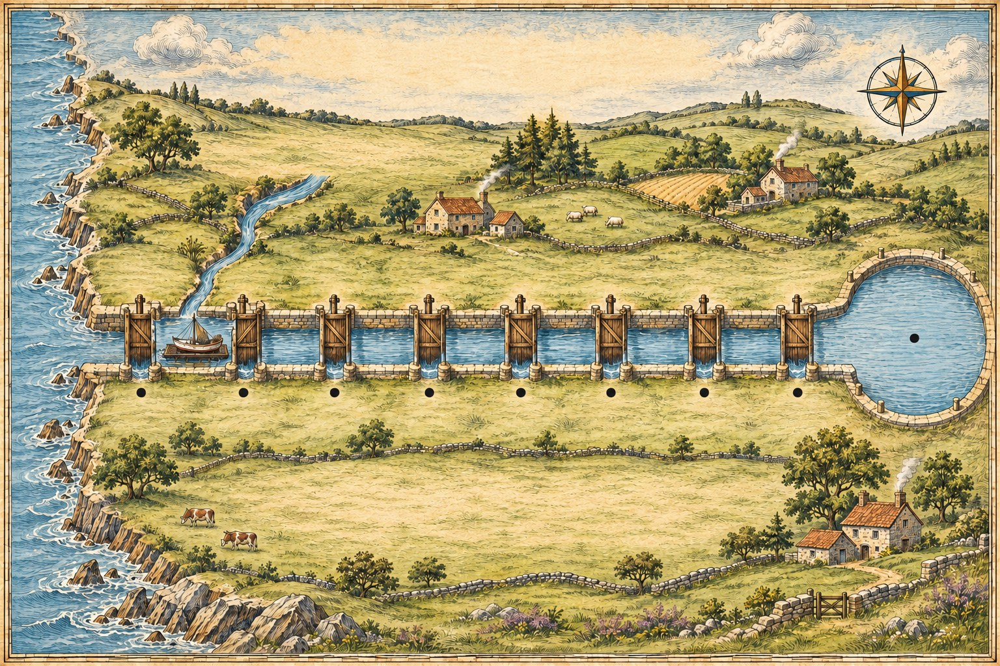

The Adjective Canal
A noun travels with its adjectives the way a barge travels down a canal: through a row of locks, in one order, and never backwards. Opinion opens first; the purpose lock is the last before the harbour, because a purpose word is almost part of the noun. Learn the eight locks once and every adjective has its place.
Read the chartEight locks, one way
Each lock asks one question about the noun, and they always ask in the same order. You will rarely need more than two or three in one sentence; the full barge is there to show where each one goes.
Opinion before fact
What you think (lovely, ugly, boring, delicious) comes before anything anyone could check.
Size, then age, then shape
big, little, long → old, new, young → round, square, flat.
Colour, origin, material
What colour, where from, and what it is made of: red, Italian, leather.
Purpose sits next to the noun
The purpose word is almost part of the noun: a fishing boat, a sleeping bag, running shoes. Nothing comes between them.
Two or three is normal
Real English seldom stacks more than three adjectives. Choose the ones that matter, and keep their order.
Nouns can be adjectives too
A noun in front of a noun works like a material or purpose word, and goes last: a stone wall, a summer dress, a glass bottle.
The eight locks
Read down the column: that is the order. Each lock asks its own question.
| Lock | It asks | Words that pass through |
|---|---|---|
| 1 · opinion | what do you think of it? | lovely, nice, ugly, boring, delicious, strange |
| 2 · size | how big? | big, small, tiny, huge, long, short |
| 3 · age | how old? | old, new, young, ancient, modern |
| 4 · shape | what shape? | round, square, flat, narrow, wide |
| 5 · colour | what colour? | red, green, pale blue, dark |
| 6 · origin | where from? | French, Chinese, Scottish, northern |
| 7 · material | made of what? | wooden, metal, cotton, glass, paper |
| 8 · purpose | what is it for? | fishing, sleeping, running, reading, travel |
When two come from the same lock
Adjectives from different locks sail straight through: a big old boat, no comma. Two from the same lock cannot queue, so they take the side channel: a comma, or and.
Comma, and, or nothing
Ask whether the two words answer the same question.
| The adjectives | Write | Example |
|---|---|---|
| from different locks | nothing between them | a beautiful old ship |
| two opinions | a comma | a friendly, helpful crew |
| two colours | and | a blue and white flag |
| two materials | and | a wood and glass door |
| after be, look, seem | commas and and | The cabin was small, dark and cold. |
a friendly, helpful crew · a blue and white flag
Read the chart
Click a lock and its line lights up below. Switch the cargo to send a different noun down the canal: the words change, the locks never do. Read the bottom line each time; it is the whole barge in order.

Drag the chart sideways to reach Noun Harbour.
Opinion first
Then the facts
Next to the noun
Wrong-way barges
These are the orders learners most often send down the canal backwards. Each one has a lock that should have opened first.
| Not this | This | The lock that comes first |
|---|---|---|
| a French old car | an old French car | age before origin |
| a wooden big table | a big wooden table | size before material |
| a red beautiful dress | a beautiful red dress | opinion before colour |
| a leather new jacket | a new leather jacket | age before material |
| a running new pair of shoes | a new pair of running shoes | purpose stays next to its noun |
The order is a strong habit, not a law, and a speaker will break it for emphasis now and then. But a learner who keeps to it never sounds wrong, and one who breaks it by accident always does.
Signal words
Opinion locks — words that judge
- lovely, nice, beautiful, ugly
- boring, interesting, strange
- delicious, awful, perfect
- friendly, helpful, rude
- anything another person might disagree with
- they always open first
Fact locks — words you can check
- size: big, tiny, long
- age: old, new, modern
- shape: round, flat
- colour: red, dark blue
- origin and material: Italian, wooden
- purpose, last of all: fishing, sleeping
One question settles most orders: could someone disagree with this word? If yes, it is an opinion, and it goes first.